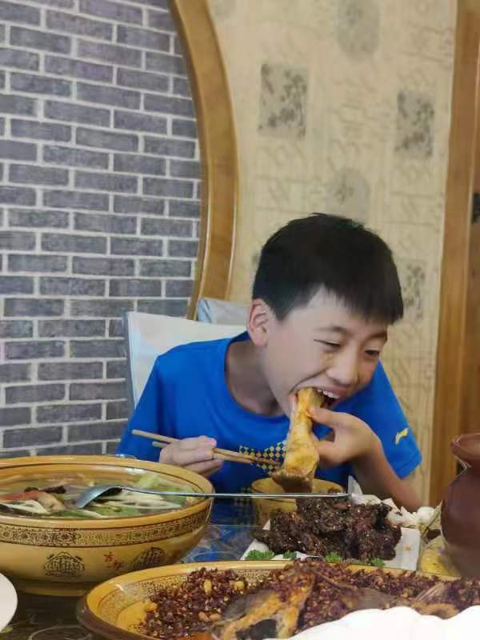

钵钵鸡是一种四川传统名小吃，属于川菜系。从清代流传至今已有上百年的历史。是以陶器钵盛放配以麻辣为主的佐料，加上多种调料的去骨鸡片拌和而成。有皮脆肉嫩，麻辣鲜香，甜咸适中的特色。吃奶汤面时配以钵钵鸡，别具风格。1990年获成都市个体名小吃优质奖，1991年被成都市人民政府命名为优质名小吃。 比较出名的如：钵客藤椒钵钵鸡、祥和祥钵钵鸡；钵钵鸡一听其名，就觉得很新奇，“钵钵”其实就是瓦罐，钵外面是画着红黄相间的瓷质龙纹，钵内盛放配以麻辣为主的佐料，菜品在特珠殊加工后用签串制，晾冷浸于各种口味的佐料中，食用时自取自食，除味道悠长外更添情趣盎然。 有着深厚的历史渊源。钵钵鸡食用方便，多种口味可选择，配以特色鸡汤饭即可休闲品味，亦可权作一餐。钵钵鸡，还是可以观赏的。将肉煮熟，不能煮烂，八分火候就行。尔后晾干，切成片，用竹签分门别类串成串。肉片是肉片，脏腑是脏腑，鸡腿是鸡腿，翅膀是翅膀。放进藤椒油汤里一捞，再举至嘴边，油艳欲滴。盛装鸡肉的钵钵也是可以观赏的。青花钵，为上。粉红的肉，青绿的汤，翠蓝的钵。把樟树、桂树木板镶拢来，外面用竹篾窟紧，就像一只洗脚盆。
